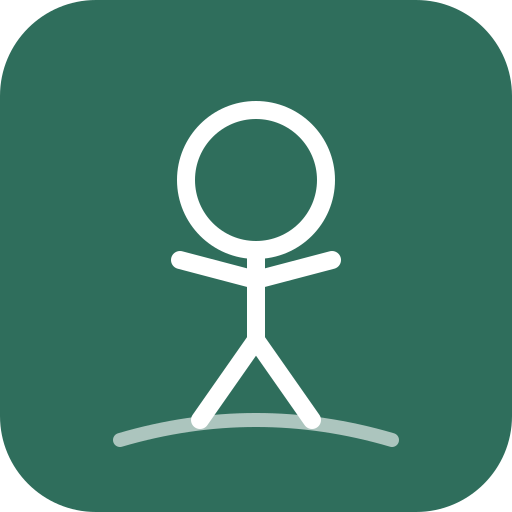
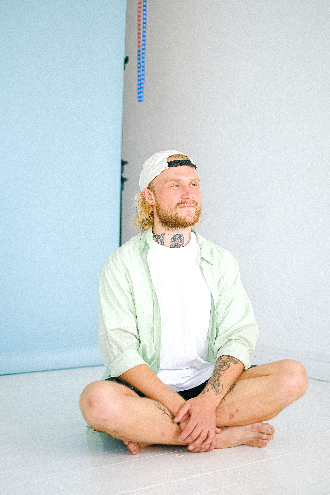

PostureShiftVerdieping
Op de startpagina hebben we vloerzitten voorgesteld als de houding die in onderzoek het beste scoort. Hier gaan we dieper in: wat het onderscheidt van andere houdingen, hoe je het in de praktijk toepast en wat er cultuuroverstijgend voor pleit. Elke bewering is direct aan de bron gekoppeld.

Bij stoel, barkruk of staan betekent een wisseling daarentegen bijna altijd een wisseling van meubelstuk of van hele categorie. Historisch gezien is stoelzitten bovendien geen fysiologisch vastgelegde standaard: het heft de natuurlijke kromming van de wervelkolom eerder op en heeft zich pas cultureel als norm doorgezet — niet omdat het anatomisch noodzakelijk zou zijn.
Bron: Aktion Gesunder Rücken (AGR) e.V., Bewegte Schule: „Sitzen auf Stühlen – Entstehungsgeschichte eines Massenphänomens" (pdf)
Kinderen neigen van nature naar houdingen dicht bij de grond — een lage tafel met kussens sluit beter aan bij deze natuurlijke voorkeur dan een kinderstoel met opstapje.
Bron: Akutmag
Op gladde vloeren is een antislipmat aan te raden, zodat kussens of zitvlakken niet wegglijden.
Praktische opmerking — geen studie, eigen inschatting.
Daarbij komt de romp- en rugspieren (onder andere de rugstrekkers), die de bovenlichaam rechtop houden waar normaal een rugleuning zou ondersteunen. Precies deze spiergroepen waren het ook die in de op de startpagina genoemde Hadza-studie in hurk- en knielposities duidelijk actiever werden gemeten dan bij zitten op een stoel.
Structurele aanpassingen door daadwerkelijke spieropbouw treden later op en zijn meestal pas na 6 tot 8 weken van regelmatige training meetbaar. Dat geldt voor krachttraining in het algemeen en is naar analogie toepasbaar op de spieren die worden aangesproken door regelmatig vloerzitten — een aanwijzing dat geduld onderdeel is van het proces.
Bron: Moritani T, deVries HA (1979): „Neural factors versus hypertrophy in the time course of muscle strength gain." American Journal of Physical Medicine 58(3).
Een geleidelijke opbouw kan daarbij helpen: korte vloerzit-intervallen binnen de PostureShift-rotatie, die geleidelijk kunnen worden opgebouwd in plaats van meteen lang achtereen te zitten.
Praktische opmerking — geen studie, eigen inschatting op basis van algemene trainingservaring.
Slaapkwaliteit en de juiste matrasstevigheid zijn echter een apart en zeer individueel onderwerp. Sommige mensen geven de voorkeur aan een stevigere ondergrond — een algemeen advies om op de vloer te slapen valt daaruit echter niet af te leiden.
Bron: Indojunkie
Antropoloog Gordon W. Hewes documenteerde in zijn veelgeciteerde studie meer dan 100 gewoontematige zithoudingen wereldwijd — met de inschatting dat minstens een kwart van de mensheid gewoonlijk in diepe hurkzit rust.
Dat wijst erop dat beweging die stevig in het dagelijks leven verankerd is, apart compensatiesport op zijn minst deels overbodig kan maken — dit moet echter niet worden opgevat als garantie of vervanging van sport, maar als een van meerdere bouwstenen.
Bron: Spektrum der Wissenschaft, Raichlen et al., PNAS 2020 (oorspronkelijke bron)
Pas vanaf de 18e tot de 20e eeuw werden beide steeds meer geherinterpreteerd als compensatiebeweging voor de zittende levensstijl. Culturen die deze herinterpretatie nooit nodig hadden, hadden simpelweg geen behoefte aan een apart bewegingsprogramma — omdat houdingsvariatie en beweging toch al stevig in het dagelijks leven verankerd waren.
Redactionele inschatting — geen aparte bron, eigen historische samenvatting.
Een methodische kijk op alledaagse houding, met directe aandacht voor houdingsgerelateerde rugklachten.
Naar het boekDe titel verwijst naar de uitspraak die is bedacht door dr. James Levine (zie Achtergrond) — het boek zelf is geschreven door Kelly Starrett.
Naar het boekLet op: de hier voorgestelde methoden worden in vakkringen als controversieel beschouwd. De vermelding is een neutrale leestip, geen bevestiging van de methode door PostureShift.
Naar het boek